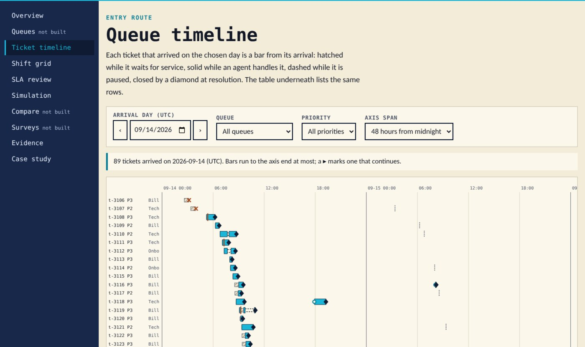
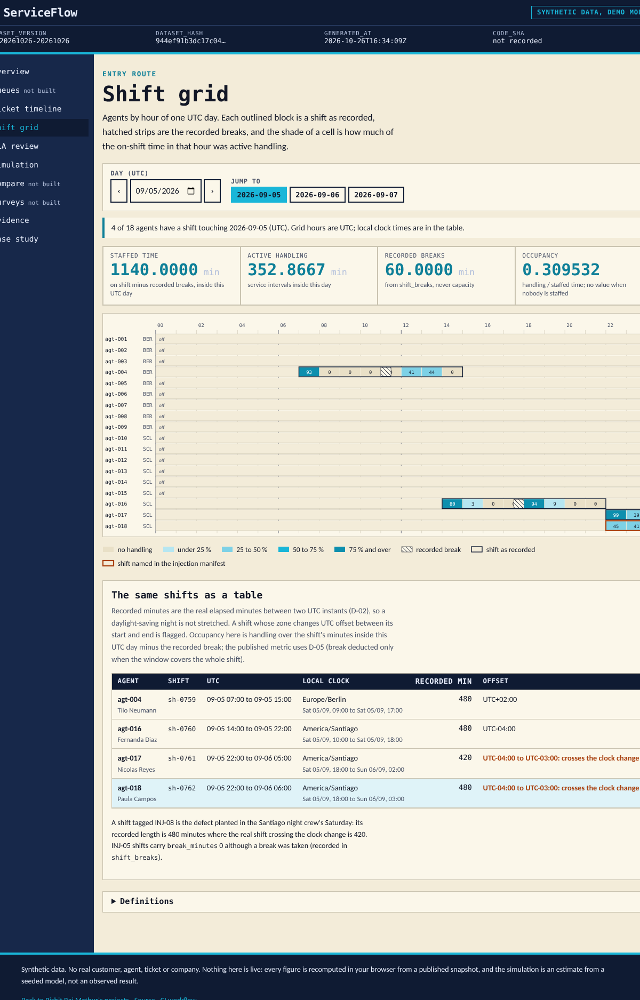
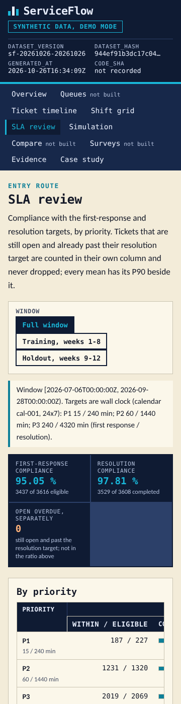

Dashboard · Operations analytics · FastAPI · React · 2026-10
Which Staffing or Routing Change Meets Support Targets Under Uncertain Workload?
ServiceFlow: a support queue reconstructed from its event log. FIFO within priority, waits measured from the original arrival, breaks deducted from staffed time, SLA compliance with open overdue tickets counted separately and P90 always beside the mean, and a seeded queue simulator that reproduces the known answer (three tickets at minute 0 served for 10 minutes each wait 0, 10 and 20, mean 10, last completion at 30) before any random arrival is drawn. Synthetic data; project 04 of the Business Data Lab.

- Problem
- The weekly service review argues about one number. Average wait looks fine while a tenth of the technical P1 tickets sit for ten hours; a transfer quietly restarts the clock; a bot…
- Role
- Built and written by Rishit Raj Mathur; the case study names its sources and checks.
- Tools
- Python 3.11 (integer seconds, exact rational rates), PostgreSQL 16 (append-only ticket events, agent intervals under row locks), FastAPI 0.162 (commands with idempotency keys, 401/403/409/422 contracts, 501 for the unbuilt), SQL reference recomputation of every metric over three windows, TypeScript + React 18 + Vite, Playwright 1.55 (journey, 4 widths, 200% zoom), GitHub Actions (postgres:16 service, hosted runners only), 333 Python tests, 296 TypeScript golden checks, 65 browser tests
- Status
- Case study with a live demo
- Evidence
- Open ServiceFlow · Code on GitHub

Everything is synthetic: the three queues, 18 agents, 3,826 tickets and every figure come from a seeded generator whose designed relationships (a long technical P1 tail, a Monday-morning capacity bind, faster resolution above proficiency 4, a +20% holdout) and nine injected defects are published in an injection manifest. The public site is a static demo over a published snapshot; the simulator runs in the browser with the published seed and is labelled an estimate, never a realised staffing benefit. The transactional behaviour (loading events, pausing and resuming work, recording transfers, running and comparing simulations) is verified separately on GitHub-hosted runners against a transient PostgreSQL. Built from a written specification by a coordinating session delegating bounded work to implementation subagents; not a measurement of any real support team.
01The problem
The weekly service review argues about one number. Average wait looks fine while a tenth of the technical P1 tickets sit for ten hours; a transfer quietly restarts the clock; a bot acknowledgement counts as a first response; an agent on a break is counted as available; and the staffing proposal is a simulation whose warm-up was left in the average. Nobody can say whether adding one agent on Monday morning would have met the target, because the estimate and the history are measured differently.
ServiceFlow fixes the measurement first: one event log with FIFO within priority, waits and resolution from the original arrival, breaks deducted from staffed time, the utilisation and the waiting tail shown as two numbers, arrival distributions estimated from the training weeks only and validated on the holdout, and simulation estimates kept visibly apart from anything realised.
02What I built
Two implementations of one contract, checked against a hand calculation and each other.
- The contract: an append-only ticket event log (created, bot and human replies, assignment, pause and resume, transfer, reopen, abandonment, resolution) replayed into one state per ticket; FIFO within priority; wait, first response and resolution measured from the original arrival, never from a transfer; handling clipped to the window; breaks deducted from staffed time; SLA clocks on the wall-clock calendar with open overdue tickets counted separately; a queue simulator with exponential service, a declared warm-up and a horizon, run on common random numbers so that policies are compared on the same demand path; estimates labelled as estimates.
- A known-answer fixture written first: one agent, three tickets at minute 0, 10-minute service, so starts at 0, 10 and 20, waits of 0, 10 and 20, a mean wait of 10.0000 and the last completion at 30.0000, plus a rejected-record variant and an empty-population variant. A standard-library script reproduces all 184 figures from the records.
- The Python domain, PostgreSQL schema and FastAPI commands: load an event batch with duplicates and out-of-order arrivals handled and every rejection kept with its reason; assign, pause, resume, transfer and resolve under row locks in a fixed order with deadlocks retried then refused; compute every metric over any window and grouping; run a seeded simulation and compare two policies with a paired interval. 333 tests run against PostgreSQL 16 on a GitHub-hosted runner, and an independent SQL recomputation agrees with the domain on all 28 metrics over the full, training and holdout windows.
- The static site: the same contract in TypeScript with integer seconds and exact rationals, including the seeded generator reimplemented so that the browser reproduces the Python simulator event for event; a queue timeline, a shift grid across a daylight-saving weekend, an SLA review, a simulation studio and an evidence page that runs the golden checks live; 296 golden checks and 65 Playwright tests at four widths and 200% zoom.
- A deterministic synthetic world: three queues, 18 agents in Berlin and Santiago with shifts declared in local time, 3,826 tickets over twelve weeks with Poisson arrivals by hour of week, a +20% holdout, and nine injected defects (a bot acknowledgement labelled human, a reopen recorded as a new customer, an unqualified assignment, two simultaneous services for one agent, a break counted as available, a transfer that resets the arrival, a warm-up left in a simulation, a shift across the clock change, survey non-response skew) published in a manifest with how each must be handled.
03How it was built
- 01
The known answer before any randomness
One agent, three tickets arriving at minute 0, deterministic 10-minute service. FIFO gives starts at 0, 10 and 20, waits of 0, 10 and 20, a mean wait of 10 minutes and the last completion at minute 30. A standard-library script reproduces the figures from the records and the simulator must return exactly these events before it is allowed a seed.
- 02
Utilisation and the tail are two numbers
Occupancy says how busy the agents were; it says nothing about the tenth of tickets that waited longest. Every screen that shows a mean shows the P90 beside it, and the SLA review counts tickets that are still open and already overdue separately from the compliance rate of the resolved ones.
- 03
Train on eight weeks, validate on four
Arrival intensities by hour of week are estimated from weeks 1 to 8 only. Weeks 9 to 12 carry a designed +20% load that the generator discloses; the simulator's forecast is compared against them rather than against the weeks it learned from.
- 04
Two modes, disclosed
Mode A is the backend on a GitHub-hosted runner with a transient PostgreSQL. Mode B is the public site over a published snapshot; the simulation studio runs in the browser with the published seed and says that nothing is staffed or routed by it.
04Results
The shift grid on the synthetic snapshot (Saturday 2026-09-05 UTC, the Santiago clock-change night: four agents on shift, 1,140 staffed minutes after breaks, occupancy 0.31; the night crew's recorded 480-minute shift against the real 420 is the injected defect INJ-08, outlined):

The SLA review on a phone:

What the data supports. Over the twelve weeks the queues took 3,817 accepted tickets (9 more were rejected with their dependants, 70 records in all, every one named in the injection manifest) and completed 3,608. Mean wait is 25.5 minutes, mean first response 28.0 minutes with a P90 of 44.2, mean resolution 164.6 minutes; first-response compliance is 95.0% overall but 82.4% for P1 (187 of 227 within 15 minutes), resolution compliance 97.8%, no ticket open and overdue at the cutoff; agent occupancy is 0.42 over 447,450 staffed minutes; 11.8% of chat and phone tickets were abandoned before service; surveys were invited on 59.5% of completions, answered by 34.9%, with a CSAT of 0.864 among those who answered. The simulation studio reproduces the known answer in the browser and then re-runs the three published scenarios on the published seed: the baseline (five agents, 3.12 arrivals an hour) has a mean wait of 14.6 minutes and a P90 of 31.0; one more agent brings them to 3.9 and 18.7; the holdout intensity on five agents pushes them to 33.6 and 80.9. These are estimates from a seeded model, compared on the same demand path, and the page says so; they are not realised staffing benefits. The generator's designed relationships (a long technical P1 tail, the Monday-morning bind, faster handling above proficiency 4, the +20% holdout) are published in its manifest; nothing here is a finding about any real support team.
Not built yet: the shift-scenario builder (C07) and the recommendation export (C10) return 501; the queue, compare and survey screens are stubs that say so. The review pass by an independent reviewer is the next step on the branch.
05What I'd do next
- Build the shift-scenario builder (C07) and the recommendation export (C10), which return 501 today, and the queue, compare and survey screens.
- Decide the break rule for a window that cuts a shift (D-05 keeps the full overlap today) now that breaks are declared intervals.
- Projects 05 to 10 of the lab follow the same gates.